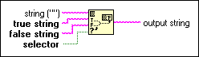

Append True/False String Function
Owning Palette: Additional String VIs and Functions
Requires: Base Development System
Selects either a FALSE or TRUE string according to a Boolean selector and appends that string to string.

 Add to the block diagram Add to the block diagram |
 Find on the palette Find on the palette |